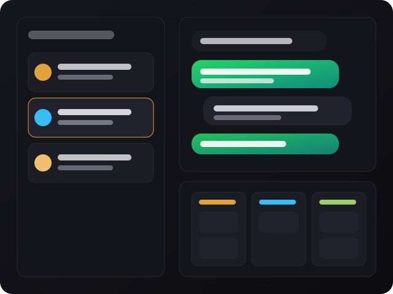

Template self-hostable — inbox compartilhada, pipelines de vendas, disparos e automações no-code. Fork it, brand it, host it: seu código, seu Supabase, seu domínio.

wacrm é um template — você faz fork, hospeda e é dono de tudo: código, banco de dados (Supabase) e domínio. Sem seat pricing, sem lock-in.
Inbox compartilhada na WhatsApp Business API oficial (vários agentes num número só) com pipelines de vendas em Kanban ligados às conversas.
Automações no-code (gatilhos, condições, webhooks) e um assistente de IA (sua própria chave OpenAI/Anthropic) que responde com base numa base de conhecimento própria.
API REST pública com chaves revogáveis, mais um servidor MCP pra controlar o CRM direto do Claude, Cursor e outros assistentes de IA.
O fluxo recomendado é fork → configurar credenciais → deploy — sem infra própria pra manter.
Stack: Next.js 16 (App Router), React 19, TypeScript, Tailwind v4, Supabase e a Meta Cloud API.
Pra rodar localmente e instalar dependências.
# checar versão
node -vPostgres + Auth + Storage + RLS. Você cria o seu e preenche as chaves no .env.local.
# variáveis principais
NEXT_PUBLIC_SUPABASE_URL
NEXT_PUBLIC_SUPABASE_ANON_KEY
SUPABASE_SERVICE_ROLE_KEYApp Meta com Cloud API configurada, mais uma chave de encriptação de 64 caracteres pros tokens.
# variáveis
META_APP_SECRET
ENCRYPTION_KEYPassos reais pra colocar sua própria instância no ar em desenvolvimento.
Faça fork deste repo no GitHub e clone o seu fork.
git clone https://github.com/<seu-usuario>/wacrm.git # seu fork cd wacrm
Instalação padrão via npm.
npm install
Copie o exemplo e preencha as credenciais do Supabase e da Meta.
cp .env.local.example .env.local # edite com suas chaves
Sobe o servidor local — você será redirecionado pra /login (ou /dashboard se já estiver autenticado).
npm run dev # http://localhost:3000
Os mesmos comandos que rodam na CI do projeto.
npm run typecheck npm run lint npm run test
Recomendado: Hostinger (Node.js gerenciado, conecta o fork e builda no push pra main). Mas roda em qualquer lugar com Node.js — Vercel, Railway, VPS próprio.
wacrm é um template — o roadmap é definido pelos mantenedores; documentação completa de self-host fica no site oficial.
/api/v1) e servidor MCP pra automações e integrações com assistentes de IA.